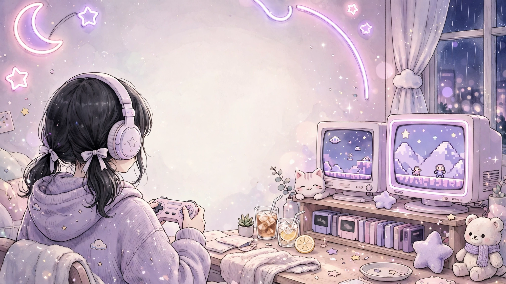
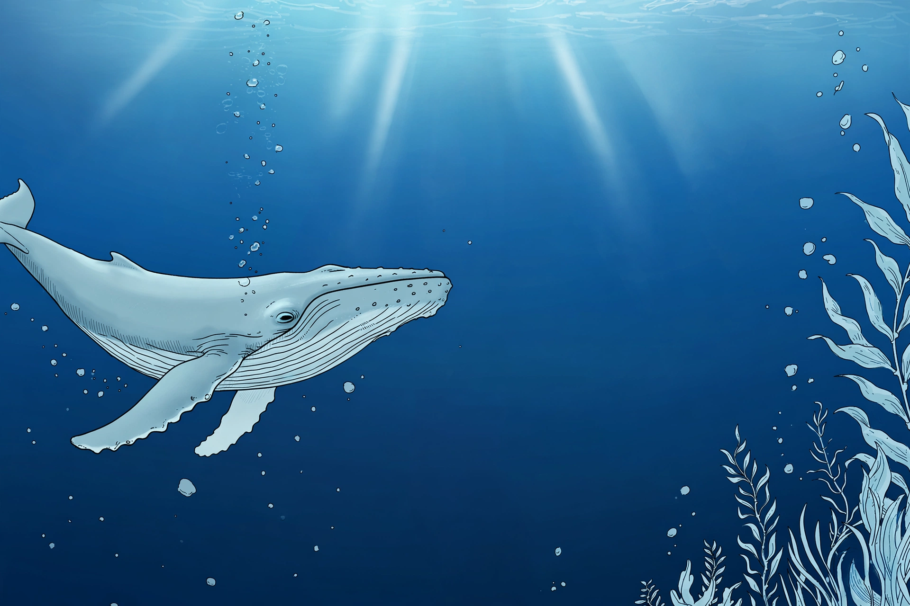
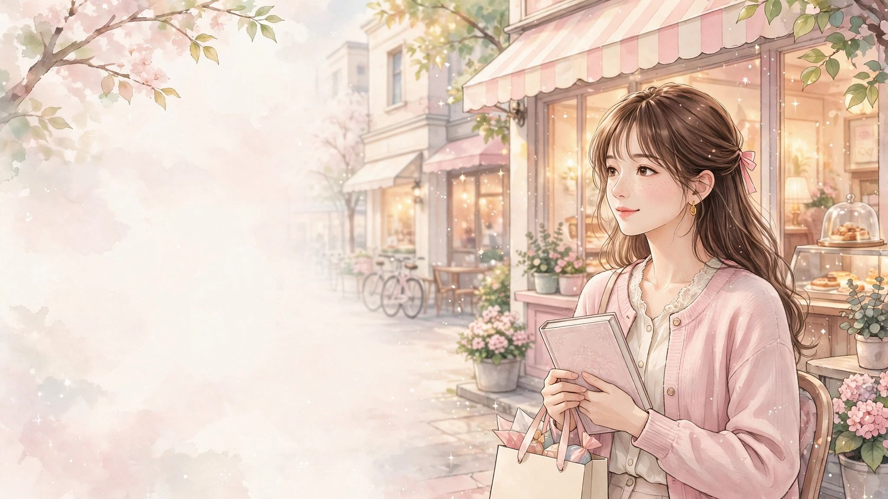

蜘蛛と鬱蒼とした森 無料
苔むした暗い森と静かな蜘蛛。雫の光る、しっとりした世界。
🎀 もこブラ（仮名）— 着せ替えできる可愛いブラウザ
森の朝、海の底、二人だけの月面。気分のままにブラウザ全体の世界を着せ替えられる、PCのための小さなブラウザです。テーマは9種類、ぜんぶ無料。
ダウンロード（無料）
Mac / Windows / Linux ・ 無料 ・ アカウント登録なし
⚠️ 初めて開くときの確認画面について。Macでは「開発元を確認できないため開けません」と出たら、アプリを右クリック（または Control+クリック）→「開く」を選んでください。Windowsでは「WindowsによってPCが保護されました」と出たら「詳細情報」→「実行」で起動できます。どちらも署名なしの個人配布アプリへの定番の確認です。



鹿と暖かな森 月と二人だけの宇宙飛行士 あなただけの美少女恋人 ゲーム女子とレトロなネオン空間↑ 押すと着せ替えの雰囲気が伝わります（実際のアプリでは9テーマぜんぶ使えます）
どの世界に住むかは、その日の気分で。細い線と静かな色で描かれた、9つの小さな世界を用意しました。
苔むした暗い森と静かな蜘蛛。雫の光る、しっとりした世界。
夕日の木漏れ日と穏やかな鹿。あたたかい午後の森。

深海の静けさと大きなクジラ。光の差す青の底へ。
暗い空、大きな月、二人だけの宇宙。静けさに包まれる夜。

静かでおしゃれな都会の日常。カフェと本と夕方の街。
ネオンの部屋とレトロゲームの光。夜ふかしの相棒に。

砂紋と苔と灯籠の庭園。ほっとする和の静けさ。

ビビッドでポップなカラーの世界。気分を上げたい日に。
開くたびに迎えてくれる彼女。柔らかなピンクの部屋で。
毎日開く道具だから、実用面も手を抜きません。
9つのテーマは全部無料。課金要素はひとつもありません。
ブラウザの中に広告は入りません。世界観を壊さないことが約束です。
ダウンロードしたらすぐ使えます。ログインも個人情報の登録も不要です。
日々のブラウジングに必要な機能はひと通り。いつもの使い心地のままです。
「こんなテーマがほしい」「ここが使いにくい」「この世界が好き」——どんな声でも大歓迎です。届いた声は開発のいちばんの材料になります。次のテーマは、あなたのリクエストから生まれるかもしれません。
声をとどける（GitHub Issues）はい。アプリもテーマも全部無料です。課金要素はありません。
まずはPC版のみです。
表示エンジンには実績のあるChromiumを使い、ログイン不要・データ収集なしで設計しています。